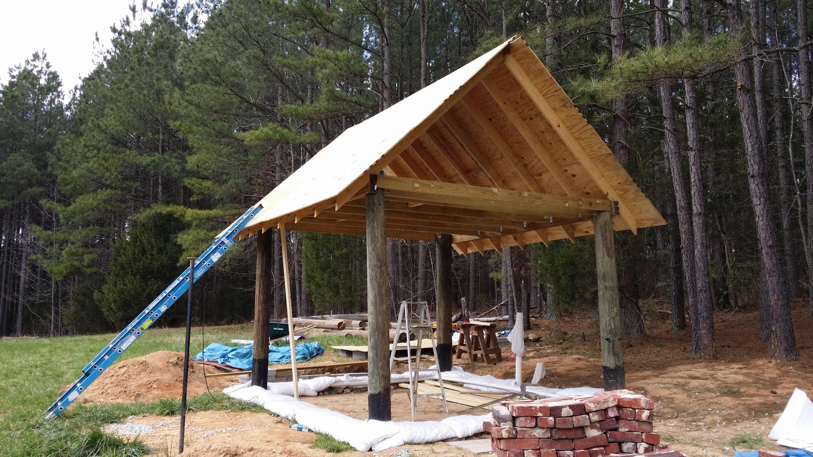

Tips for building your own house. Now, my experience is with cob, and I've made a few references to this building style without a lot of exposition on it. While there are many different types of alternative building styles, from using straw bales to tires filled with dirt, which are worthy of consideration, cob is special in several specific areas: sustainability, availability, and accessibility. These make it both unique and well-suited for building by both the experts (people like Ianto Evans and his team at the Cob Cottage Company); and people like you and me, who might think building houses is cool, but don't have a wealth of experience.
Cob is something literally anyone can take part in. It is a combination of clay, sand and straw, with a majority being the former two. This causes a lot of people to refer to it as a mud house. While technically accurate (in the sense that mud often contains clay), there is a big difference between a cob house and a mud house. The most important difference is structural stability. Cob is specifically formatted to be resistant to the elements, to the degree that you could leave it entirely unfinished, and it would sustain minimal wear. Each of the three ingredients is key. Clay is the main substance of which cob is composed. It gives the malleability and basic strength of the cob. It is the glue that holds the cob together. If you've ever baked (or over-baked) clay, though, you know that it can crack. To combat this tendency, the sand is added to the mixture. Just sand and clay, however, aren't enough to give a wall real strength. The straw provides the strength of the wall, both holding together and being held together by the other elements. Mud houses might go up easily (at least for kids with energy to burn), but they lack the real stability that a time tested mixture like cob can provide. Cob houses are composed of elements which are sustainable, and provide a shelter which helps to provide its own climate control. Even more importantly, a well-built cob house can provide a sustainable home for generations.
So why use this combination of clay, sand, and straw? The primary reason is that these are elements that are easy to get almost anywhere. In my post on the journey to a better kind of ouse, I talked about the importance of connecting your house with the place you want to live. Cob makes this possible in a very unique way. The elements that make up cob are available almost anywhere you'd want to live. On a city corner? You bet. In the plains? Clay, sand and straw can be found there. Some places might take a little more doing than others, but you can build a cob house almost anywhere. Cob houses use the resources that are available, wherever you are. As we journey to building houses which are a better fit for the land where we want to live, we become more aware of what is available. This is where the accessibility of cob comes in. While most houses are built by licensed contractors, cob can be built by everyone from a four-year old boy to his grandmother. And trust me, you'll want the help of anyone you can get. Cob is often labor intensive. But unlike traditional building styles, it can be broken down to be accessible to anyone. It can be spread out over time to provide both a fun project, and an opportunity to teach the next generation how to engage with the land and their homes in a respectful and sustainable way.
Cob may not be a headline news item, but it's a steadily growing opportunity to engage with a better way of living. One which considers the impact the billions of people sharing the world today have on the earth, and which provides a means for sheltering those people in a sustainable way. More than just sustainability, though, cob provides an available, accessible means for making a place not just to live, but to call home. There's no place like home, and there's no home like one on which you can see the fingerprints of your children, parents, and grandparents on the walls, windows and ceilings.